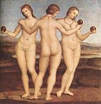
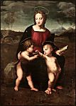
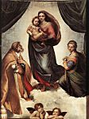
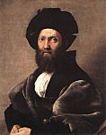

Raphael
Click on the images to enlarge
1 
2 
3 
4 
5 
6 
7 
8 
9 
10 
11 
12 
13 
14 
15 
16 
17 
18 
19 
Raffaello Sanzio, or Santi, known as Raphael
(Urbino 1483 – Rome 1520)

Introduction
The artist’s passage through central Italy justifies the traditional division of his brief career, of which painting was the glory, into three periods of increasing importance: the period of the Marches and Umbria (1500–1504), the Florentine period (1504–1508) and the Roman period (after 1508).
The Marches and Umbria
In Urbino, Raphael began learning art with his father Giovanni Santi, but undoubtedly learned more through contact with the Duke’s Court. Then he completed his apprenticeship in Perugia with Perugino, who managed to communicate to him a sense of breadth that he himself received from Piero della Francesca. The works produced by Raphael in this period — from around 1500 to 1504 — reflect the style of Perugino, sometimes also that of Pinturicchio (1454–1513), not without hinting at a more human accent and a taste for simplicity that in no way contradicts the refinement of the execution. The altar-piece for San Francesco al Monte church in Perugia (1502–1503, Vatican Art Gallery) makes the Coronation of the Madonna (1) the subject of a two-tier composition, where the variety of the attitudes and expressions testifies to personal research. Painted in 1504 for San Francesco de Città di Castello, The Marriage of the Madonna (2) (Brera Art Gallery, Milan) reprises more gracefully the demonstration of spatial geometry that Perugino had pulled off in The Giving of the Keys in the Sistine Chapel.
Florence
Moving to Florence in 1504 — he was meant to stay there four years — allowed the young provincial master to discover new horizons. He could not ignore either the tradition of the quattrocento or the simultaneous presence of Leonardo da Vinci and Michelangelo. The monumental compositions by Fra Bartolomeo (1472–1517) contributed to widening the scope of his experiences. His output from this time shows the effect of these various movements, but the increasingly profound humanity it gives off already owes everything to a personal vision.
Florentine culture impregnates certain small pictures of refined workmanship: St Michael, St George (Louvre Museum); St George (National Gallery, Washington); the diptych originally formed by The Dream of the Knight (National Gallery, London) and the Three Graces (3) (Condé Museum, Chantilly). But in Florence, Raphael devoted himself mainly to variations on a theme of the Madonna, giving them an inimitable accent of femininity and tenderness. Sometimes alone with the Child, the Virgin Mary is often accompanied by other figures, often too set in a landscape of Umbrian tradition, luminous and serene. Raphael’s most famous Florentine Madonnas are those known as the Grand Duke’s (4) (Pitti Palace, Florence) and of the House of Orléans (Condé Museum), The Madonna in the Meadow (5) (Kunsthistorisches Museum, Vienna), in which the pyramidal group is inspired by Leonardo’s St Anne, as in the Madonna with the goldfinch (6) (Uffizi Gallery, Florence) or The Beautiful Gardener (Louvre). The same theme also lies at the centre of more ambitious but clearly developed compositions that amplify it in “sacred conversation”: the “Colonna” altar-piece (Metropolitan Museum, New York), the “Ansidei” altar-piece (National Gallery, London), The Madonna with baldachin (Pitti Palace). The Entombment (7) (Borghese Gallery, Rome) is the main subject of the “Baglioni” altar-piece, painted in 1507 for San Francesco in Perugia; exceptionally, we find here a tense style, with a visual research inspired by Michelangelo. The Glory of the Trinity, a fresco painted in San Severo in Perugia, on the other hand has a peaceful breadth that looks ahead to The Triumph of the Eucharist. Lastly, to the Florentine period belong some fine portraits where the influence of Leonardo is obvious: Donna Gravida (Pitti palace), Agnolo Doni (8) and Maddalena Doni (Pitti palace), against a landscape background, just like the Lady with Unicorn (9) (Borghese Gallery).
Rome: pontifical commissions
Arriving in Rome in 1508, Raphael would find there the territory favourable for the blossoming of his genius. Exalted and matured by the revelation of Antiquity, as well as by the examples of Bramante and Michelangelo, he soon emerged as the artist best capable of translating the great designs of the humanist Popes of the Renaissance into a language with universal appeal; first of all Julius II, who dreamed of resuscitating Imperial Rome under the spiritual, temporal and cultural domination of the Church.
In the Vatican Palace, a team of painters from Sienna and Umbria had just started the decoration of the apartments located above those of Alexander Borgia VI. In 1508, Julius II decided to replace them with Raphael, whom Bramante had introduced at the Pontifical Court. Thus were born, under the name of stanze, or “chambers” of the Vatican, the most famous cycle of frescoes due to this artist — and in large measure, to his studio.
The chamber known as “of the Signature” was painted from 1509 to 1511, almost entirely by Raphael’s own hand. This ensemble, where his art reaches the balancing-point and obeys a particularly lofty inspiration, gives form to one of humanism’s great projects: the reconciliation of pagan culture with the Christian ideal. Amongst the grotesques already executed by Sodoma (1477–1549), the four medallions on the vault contain the allegorical figures of Theology, Philosophy, Poetry and Justice, to which the subjects in the adjacent compartments refer: Original Sin, Astronomy, Apollo and Marsyas, the Judgement of Solomon. The four-part theme is developed by the great arched frescoes on the walls, where allegory gives way to living representations. Illustrating Theology, the Triumph of the Eucharist (10) (well known under the rather imprecise name of “Dispute of the Holy Sacrament”) magnificently combines a terrestrial zone, that of the militant Church (doctors, popes and faithful), and a celestial zone, that of the Church triumphant (prophets, apostles and saints), in an inward-curving space where everything converges towards the central monstrance. Philosophy is celebrated by The School of Athens, whose figures of philosophy and scholars populate the majestic perspective of a temple inspired by Bramante. For Poetry, it is the no less clear composition of Parnassus, where ancient and modern poets accompany Apollo and the Muses; lastly, for Justice, two scenes: Gregory IX Approving the Decretals and Tribonian Consigns the Pandects to Emperor Justinian, separated by a window and surmounted with an allegorical representation of the Virtues.
Painted from 1511 to 1514, the chamber known as the “Heliodorus” denotes an evolution compared with the previous one. Less idealized, more historical, even containing some allusions to pontifical politics, the theme of the walls is that of divine intervention in favour of the Church. The medallions on the vault offer four episodes from the Old Testament. In another sense, the register of the pictorial means has broadened: movement comes into play in the scene of the Expulsion of Heliodorus from the Temple (11) (worth noting the significant presence of Julius II); chiaroscuro puts in an appearance in a night-time version of the Deliverance of St Peter; realism enters the Mass at Bolsena via the portraits of the dignitaries of the Pontifical Court, and colour, more generously treated, undoubtedly under the Venetian influence; a new compositional formula, using unequal masses, informs St Leo halting Attila (where Leo X is depicted as a saint).
Already noticeable in the Heliodorus Chamber, the amount of the work done by Raphael’s helpers becomes significant in the chamber known as “Fire in the Borgo”, painted for Leo X from 1514 to 1517, following a theme where history and actuality have a still greater place. The four main scenes show the popes by the name of Leo in action. The one that justifies the name of the room, Leo IV stopping the fire in the Borgo with the sign of the Cross (12), is the most remarkable with its composition in depth, the archæological passion to which it testifies, the plastic quality of its parts, certain of which do appear to be in Raphael’s own hand.
In the room known as “Constantine’s”, only the conception of the whole is the master’s; the execution is entirely by his pupils, for example Giulio Romano, to whom is attributed the tumultuous, grandiose fresco figuring the Battle of Milvius Bridge (or Victory of Constantine over Maxentius).
It was without doubt in 1514 that Leo X had commissioned from Raphael another major ensemble: the cartoons for ten tapestries of the Acts of the Apostles destined for the Sistine Chapel. Woven in Brussels, the original hangings are on display in the Vatican art Gallery. Seven of the cartoons survive (Victoria & Albert Museum, London): the chief merit of these large-scale compositions, in particular the Miraculous Draught of Fishes, which seems to be in his own hand, lies in the classical simplicity and the effectiveness of a staging that gives the key rôle to the characters.
From 1518 to his death, Raphael lastly directed the works for the “loges” in the Vatican. This is a gallery of thirteen bays whose delicate, lavish decoration, executed in particular by Giovanni da Udine (1487–1564), combines painted grotesques and sculpted stucco, while leaving room for some small compositions in fresco, four per bay, that illustrate the principal episodes of the Old Testament in a lively, concise manner. This famous “Bible” is of the master’s invention, and several drawings are known relating to it, but the execution was by Giulio Romano, Polidoro da Caravaggio (1500–1546), Perin del Vaga (c. 1501–1547), Giovanfrancesco Penni (1488– c. 1530), etc.
Rome: Other works
The works going on in the Vatican did not take up all of Raphael’s prodigious activity, who got to decorate several Roman edifices with frescoes. The one depicting Isaiah between two putti, in Sant'Agostino church (1511), is closely reminiscent of Michelangelo’s prophets. The commissions from banker Agostino Chigi are worthy of special attention. On the ground floor of his villa, later called “la Farnesina”, Raphael painted in 1511 the Triumph of Galatea (13), a supple composition impregnated with a delicate humanism. It was again the plastic feeling of Michelangelo that inspires the four sibyls, the angels and the putti surmounting an arch in Santa Maria della Pace (1514). In Santa Maria del Popolo, the Chigi Chapel, whose architecture is by Raphael, also has some mosaics executed to his designs (1516). The master was lastly given the task, in 1517, of decorating the loggia of the villa Chigi in fresco. Although he didn’t actually execute it, the very original invention is his, as some fine drawings testify. The room imitates a pergola with festoons of flowers and fruit; the fable of Psyche occupies the centre of the vault and its ten rises.
The succession of Roman Madonnas continues that of the Florentine period, in a more mature, and often graver, style. The Madonna known as the Duke of Albe’s (14) (National Gallery, Washington) is in tondo, as is the famous Madonna of the chair (Pitti palace). The Madonna with the Blue Diadem (Louvre) is still in a small format, while a larger composition is used for the Madonna of Foligno (Vatican Art Gallery), the Madonna with Fish (Prado Museum, Madrid), and the Sistine Madonna (15) (Gemäldegalerie, Dresden); the latter, which comes from San Sisto in Piacenza, is the most mystical in its spareness. Other religious pictures dating from the Roman period: The Vision of Ezekiel (Pitti palace), of monumental effect despite the small format; St Cecilia (Bologna Art Gallery), with its still life of musical instruments; and lastly the celebrated Transfiguration (16) (Vatican Art Gallery), in two registers, the lower part of which betrays work by pupils.
Raphael’s crushing workload did not stop him from painting, in Rome, a few portraits whose the refinement is equalled by their simplicity: The Cardinal (Prado, Madrid), Baldassare Castiglione (17) (Louvre), Fedra Inghirami (Pitti palace), the Lady with veil (Pitti palace), the presumed Bindo Altoviti (National Gallery, Washington), Leo X with two Cardinals (18) (Uffizi).
Raphael’s world
What the master’s work throughout these three periods reveals above all, and what most readily explains the extent of his success, is the prodigious capacity he had for translating very lofty concepts into a natural language accessible to all, in a world of forms imbued with a profoundly human breath. The example of the Madonnas is already significant. The accent may be put on joyful maternity (The Beautiful Gardener, the Madonna of the chair), or on the gravity of the mission (Sistine Madonna); but there is always the living image of a femininity that subtly allies grace and nobility. But the great Roman cycles allowed Raphael to prove his inventiveness more completely. True, we can’t give him the honour for the whole of a programme like the one in the Signature Chamber, where the humanism takes on a Neoplatonist resonance. Pontifical thinking played its part here, but Raphael’s interpretation allows us to understand all that they had been seeking to say. The artist’s vocation was not to trace allegorical figures — present, however, to set the theme — but rather to develop their signification in the scenes, each of which recounts an adventure of the human spirit. Obviously, composition plays a paramount rôle. In itself, it expresses the idea of a spiritual order, through the balancing of its masses, the ultimate balance of the forces it brings into play, the space it allots to each thing, and also through the suppleness of its determining lines. It breathes to the measure of a space that is amplified by perspective, where the figures count less for their own sake than for their arrangement. All this is the sign of a classical temperament, but Raphael’s genius is rich enough to admit also some apparently contrary tendencies. The Heliodorus Chamber is proof of this, with the interest shown there for movement, for night-time lighting— in other words, for the accidental — and for this individual truth that is expressed with so much penetration in the admirable portraits painted in Florence and Rome.
Raphael’s hand
It is necessary to guard against the quite widespread misconception of believing that Raphael’s merit lies in conception and perhaps in composition, but scarcely in execution, reducing him, as Bernard Berenson sought to do, to a brilliant “illustrator”. Raphael is also a very great painter. It’s true that a sort of modesty almost always led him to hide his means and his knowledge beneath an appearance of simplicity, indeed of ingenuousness. It is likewise true that he had the rôle of project manager, that the scale of his task often obliged him to entrust the execution of his commissions partly or even wholly to his pupils or colleagues, and that after all it is not easy to determine the exact scale of these interventions. However, there is a consensus in judging as autograph a certain number of works whose quality leaps out at you. Quality of drawing, attested to by numerous preparatory studies by the master preserved in the great collections around the world that give a taste of all the sensitivity of outline born out of an interplay of curves. Quality of colour, generally discreet and subservient to form, sometimes richer as demonstrated in the Mass at Bolsena (19). Quality of the workmanship, light and vibrant in the best cases, but of a virtuosity that does not deliberately flaunt itself.
The painter and his posterity
The engravings by Marcantonio Raimondi (1480–1534), a contemporary of Raphael, have contributed to the popularity of his work. Diffusion of the style took place thanks to his numerous assistants and disciples, of whom Giulio Romano appears much the most personal. It’s true that the use they make of their master’s language most often led on towards mannerism. The true heir to Raphael would rather be a French painter of the 17th century, Le Sueur.
For a long time, and not without some abuse, Raphael’s work was regarded as a sort of manifesto of classicism. This is perhaps the principal reason for the contempt that it has often encountered since the mid 19th century, expressed in particular in the revolt of the Pre-Raphaelites. Still today, Raphael’s qualities are such as may satisfy a taste search rather for the unexpected and the unfinished. An attentive viewing does however make it possible to discern beneath the cloak of simplicity that which comprises the youth and the elevation of his message.
Raphael the architect
Raphael’s architectural works merit a place amongst those that contribute to defining the spirit of the classical Renaissance. Most of it is in Rome. The Sant'Eligio degli Orefeci church dates from around 1513. In 1514, Raphael was appointed Director of Works for the Vatican basilica, succeeding Bramante; he adopted a plan that abandoned the Greek cross for a Latin one, but it was not executed that way. On the other hand, he drew inspiration from Bramante’s plans for St Peter’s in building the Chigi Chapel in Santa Maria del Popolo, circa 1515. The loggia at the Villa Madama, from around 1516, is remarkable for the stucco decorations of its vaulting.

© 2006 Umanista.Net